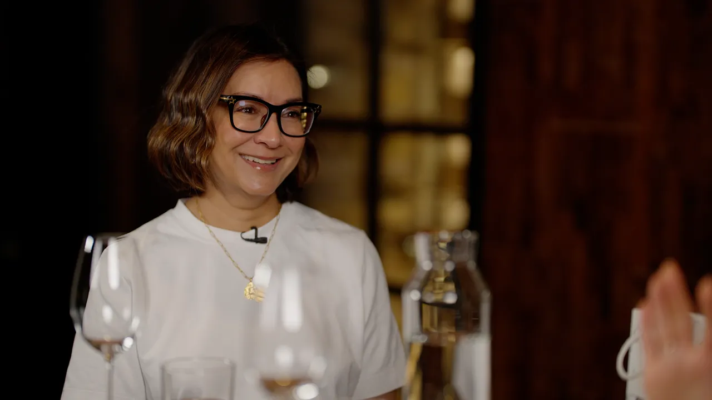

The Episode
Join the conversation with Baroness Ayesha Hazarika as she moves beyond the usual political talking points to explore the highs and lows of life in politics and journalism, the pressures behind the scenes, and the stories that rarely make the headlines.
About Ayesha Hazarika

Baroness Hazarika is a political commentator, broadcaster, and former special adviser to senior Labour Party politicians.
The Wines
The specific vintages chosen to map the defining years of Ayesha Hazarika's career.
-
Mid-Week Wine
M&S Classics Gavi
M&S | 2025 | £10.00
-
Wine 1
Bosio Boschedòr Franciacorta DOCG Extra Brut Millesimato
Hedonism | 2015 | Price not listed
-
Wine 2
Majestic | 2024 | £42.00
-
Wine 3
Barbeito Single Cask Boal Vinha do Charlot
Hedonism | 2005 | £62.00
-
Vintage 1975
Glenfarclas 20 Year Old Whisky
Hedonism | 1975 | £5,250.00